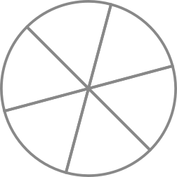
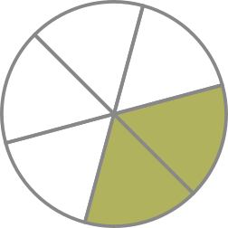

Lebih Lanjut Tentang Pecahan
Pecahan mungkin terlihat seperti jenis bilangan yang benar-benar berbeda. Meskipun terlihat berbeda, sebenarnya kita hanya perlu memikirkan pecahan sebagai "potongan dari suatu bagian yang utuh".
Pecahan selalu memiliki dua angka, yaitu angka yang ada di atas, yang dinamai dengan "pembilang". Dan juga angka yang berada di bawah, yang dinamai dengan "penyebut". Di bawah ini adalah bentuk dari sebuah pecahan.
\[\frac{5}{8}\]
5 adalah pembilang dan 8 adalah penyebut. Pecahan juga merepresentasikan pembagian antara pembilang dan penyebut. Oleh karena itu, kita bisa menyebut 5/8 ini dengan "5 dibagi 8" atau "5 per 8".
Karena kita mengetahui bahwa di matematika tidak bisa membagi apapun dengan 0, maka penyebut dari sebuah pecahan tidak boleh 0.
Hal yang paling mudah untuk merepresentasikan pecahan adalah pizza. Katakan saja saya membeli satu buah pizza, dan ingin membaginya ke kawan-kawan saya dengan porsi yang sama besarnya. Kita akan menggunakan pecahan untuk mengekspresikan seberapa banyak pizza yang ingin kita makan.
Bisa kita katakan bahwa penyebut dari pecahan tersebut adalah seberapa banyak potongan yang ingin kita potong sama besarnya, dan pembilang dari pecahan tersebut adalah berapa potong pizza yang ingin kita makan.
Jadi, saya akan membagi dengan rata pizza yang saya beli ke kawan-kawan saya. Saya potong pizza tersebut menjadi 6 bagian yang sama besarnya. Karena saya membaginya menjadi 6 potong, maka, saya akan menulis 6 sebagai penyebutnya.
\[\frac{}{ Total \hspace{0.5em}6\hspace{0.5em} potong }\]

Setelah saya membagi pizza tersebut menjadi 6 potong, saya mengambil 2 potongan pizza.
\[\frac{2 \hspace{0.5em}potong \hspace{0.5em}untuk \hspace{0.5em}saya }{ Total \hspace{0.5em}6 \hspace{0.5em}potong }\]

Sehingga, itu artinya saya telah mengambil "2 dari 6" potong pizza. Dan bentuk pecahannya adalah,
\[\frac{2}{6}\]
Dilihat dari ilustrasi tersebut, kita juga bisa melihat bahwa potongan pizza yang tersisa untuk dibagi adalah 4/6.
Jika kita menulis pecahan seperti biasanya, kita menulisnya seperti yang baru saja kita tuliskan. Cukup tuliskan pembilang di atasnya dan penyebut di bawah, juga gunakan garis sebagai pemisahnya. Namun, jika kita ingin menuliskan pecahan dalam format text (satu baris saja), maka kita menuliskannya menggunakan garis miring. Contohnya, 2/6.
Contoh lainnya,
Target anda adalah berjalan kaki sebanyak 1000 langkah, dan anda sudah berjalan sebanyak 650 langkah. Tuliskan banyak ekspresi pecahannya.
Target kita adalah 1000 langkah. Maka target tersebut adalah penyebutnya. Dan anda sudah berjalan sebanyak 650 langkah. Itu adalah pembilangnya. Sehingga kita mendapatkan 650/1000. Itu juga berarti bahwa kita masih perlu melangkah sebanyak 350 langkah (350/1000) untuk menyelesaikan target tersebut.
Persen
Di saat anda mendengar kata "persen", sebenarnya itu diambil dari bahasa Inggris "percent"/"per cent". "Cent" artinya "seratus", maka "per cent" artinya "per seratus". Persen dilambangkan dengan %. Sebagai contoh, 25% itu artinya adalah 25/100 dan 90% artinya adalah 90/100.